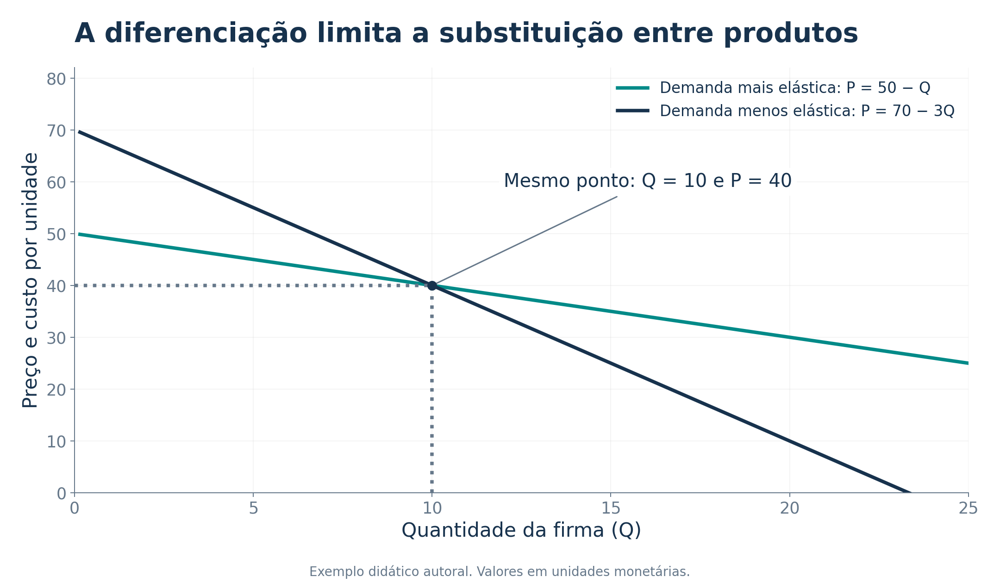
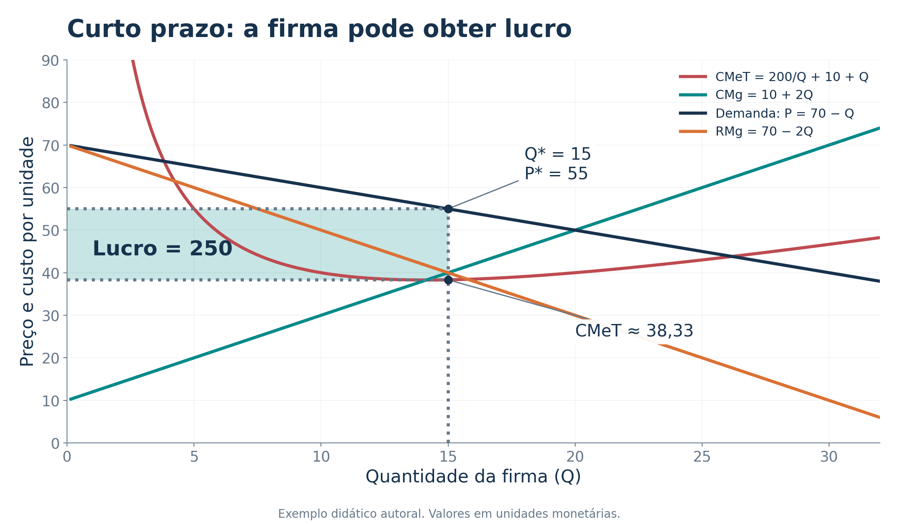
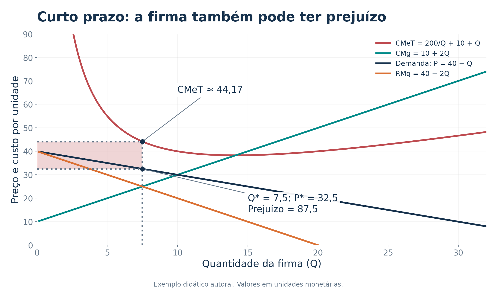
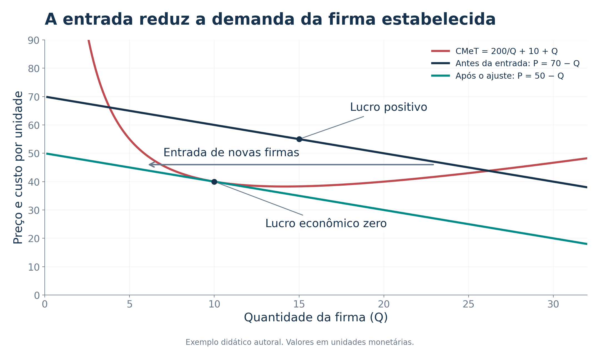
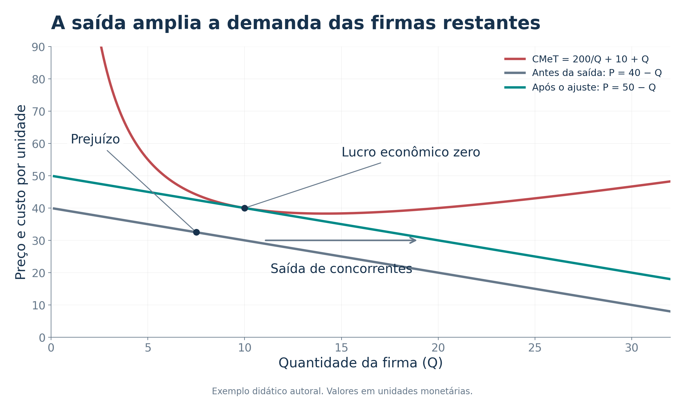
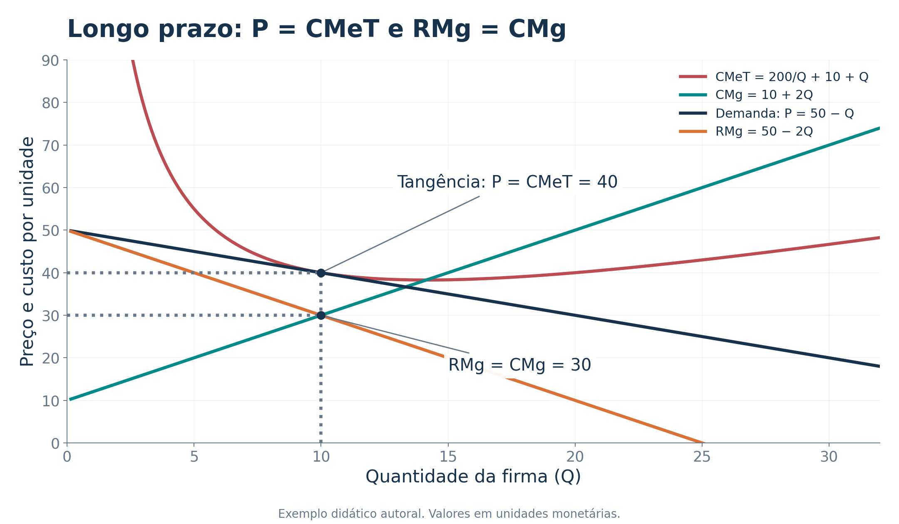
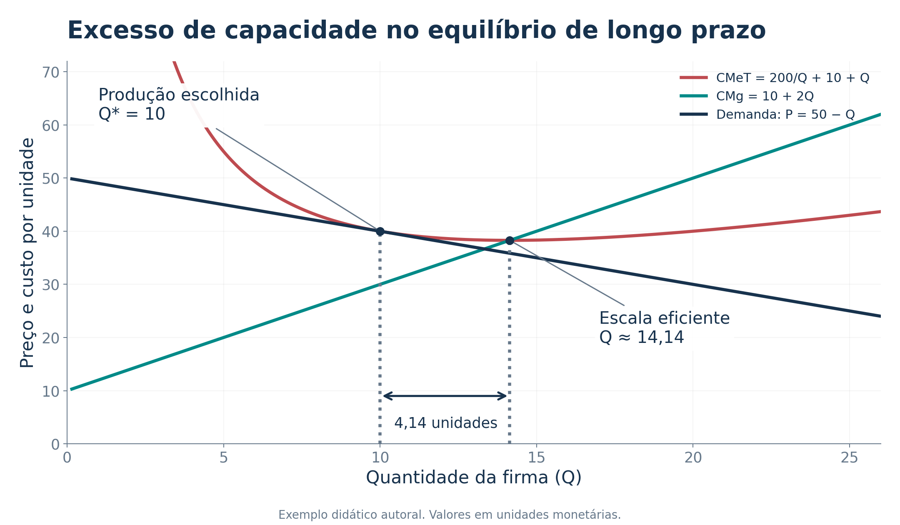
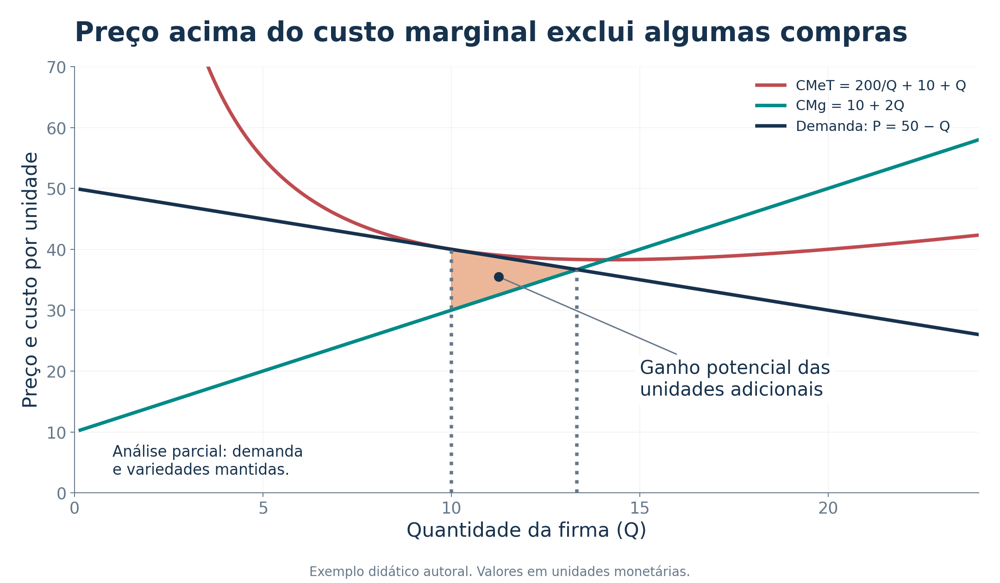
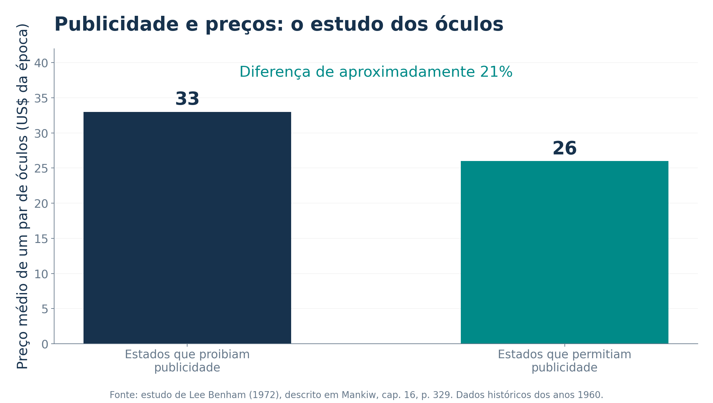
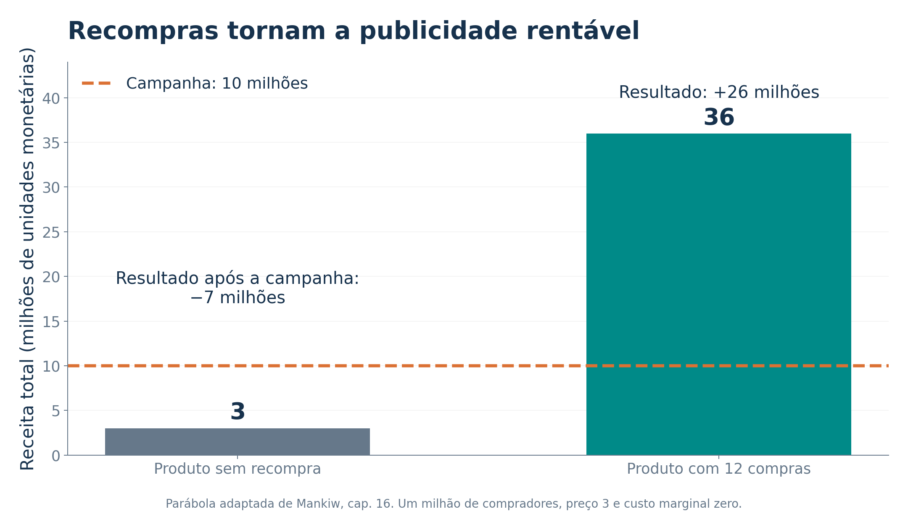

Aula 11 - Concorrência Monopolística
01 - Muitos concorrentes, produtos diferentes
02 - Entre os dois extremos de mercado
03 - Diferenciação e demanda da firma
04 - A decisão da firma no curto prazo
05 - Quando a firma obtém lucro
06 - Prejuízo não significa fechamento imediato
08 - O prejuízo estimula saída
09 - O equilíbrio de longo prazo
10 - Um exemplo completo de lucro econômico zero
11 - Por que existe excesso de capacidade
12 - Margem sobre o custo marginal
13 - Por que conquistar mais um cliente interessa
15 - Entrada, variedade e desvio de negócios
16 - Por que a política pública é difícil
17 - Por que as firmas fazem publicidade
18 - Publicidade: persuasão ou informação?
19 - O estudo histórico sobre o preço dos óculos
20 - A publicidade como sinal de qualidade
21 - O que torna o sinal crível
22 - Marcas: diferenciação e reputação
23 - O viajante e o restaurante conhecido
☕ Duas cafeterias na mesma rua vendem café, mas oferecem ambientes, localizações, receitas e atendimentos diferentes. Uma delas pode cobrar mais e continuar tendo clientes. Se exagerar no preço, perde parte deles para a concorrente.
Essa combinação de concorrência e algum poder de mercado caracteriza a competição monopolística, também chamada de concorrência monopolística. O modelo reúne três características:
Livros, restaurantes, roupas e aulas particulares podem ser exemplos, dependendo de como delimitamos o mercado. Ter uma marca não basta para classificar uma indústria nessa estrutura.
Pergunta da aula: como uma firma pode cobrar acima do custo marginal e, ao mesmo tempo, terminar o ajuste de longo prazo sem lucro econômico?
Base da aula: Mankiw, capítulo 16, Monopolistic Competition. No arquivo fornecido, a abertura está na página 347 do PDF; o título e o texto começam na 348. O capítulo termina na 364, correspondendo às páginas impressas 319 a 335.
Concorrência perfeita e monopólio são referências úteis. Entre esses extremos, há diferentes formas de concorrência imperfeita.
| Estrutura | Vendedores | Produto e entrada | Exemplo didático |
|---|---|---|---|
| Monopólio | Um | Sem substitutos próximos; barreiras à entrada | Única rede local de água |
| Oligopólio | Poucos relevantes | Produtos semelhantes ou diferenciados; interdependência estratégica | Poucas grandes firmas atendendo um mercado |
| Competição monopolística | Muitos | Produtos diferenciados; livre entrada e saída | Restaurantes de uma região |
| Concorrência perfeita | Muitos | Produto homogêneo; livre entrada e saída | Modelo de um produto agrícola padronizado |
No oligopólio, a reação de alguns grandes rivais pode ser decisiva. Na competição monopolística, cada firma enfrenta muitos concorrentes, e o modelo básico não acompanha a reação estratégica de cada um deles.
Uma medida auxiliar é a razão de concentração das quatro maiores firmas, ou \(CR_4\). Se suas participações forem 20%, 15%, 10% e 5%:
\[CR_4=20+15+10+5=50\%.\]
Esse exemplo é hipotético. A concentração ajuda a investigar a estrutura, mas não substitui a análise dos produtos, das barreiras e do mercado relevante. Não existe um número universal que separe “poucos” de “muitos”.
Um produto pode se diferenciar por qualidade, localização, design, atendimento, conveniência, variedade ou imagem da marca. Parte da diferença pode ser física; parte depende da percepção do consumidor.
Como os produtos não são substitutos perfeitos, um pequeno aumento de preço não faz a firma perder todos os compradores. Sua demanda tem inclinação negativa. Entretanto, a existência de alternativas limita o preço que ela consegue cobrar.

No ponto comum do gráfico, a demanda \(P=50-Q\) tem elasticidade em módulo igual a 4. Para \(P=70-3Q\), o módulo é \(4/3\). A comparação é feita no mesmo ponto e com os mesmos eixos; inclinação e elasticidade não são sinônimos em qualquer situação.
Intuição: quanto mais fácil substituir o produto, maior tende a ser a perda de vendas causada por um aumento de preço. A diferenciação pode reduzir essa substituição e sustentar alguma margem sobre o custo marginal.
Qual estrutura combina melhor com cada situação hipotética?
a) Centenas de produtores vendem um produto padronizado. Nenhum deles consegue elevar sozinho o preço recebido.
b) Muitas lanchonetes disputam clientes, com receitas e localizações diferentes. Novos estabelecimentos podem entrar.
c) Duas grandes empresas atendem quase todo o mercado e acompanham atentamente os preços e as decisões uma da outra.
a) Concorrência perfeita. O produto homogêneo e a pequena participação individual sustentam o comportamento de tomador de preço.
b) Competição monopolística. Há muitos vendedores, diferenciação e possibilidade de entrada. Cada lanchonete tem alguma influência sobre seu preço.
c) Oligopólio. A interdependência entre poucos vendedores relevantes torna a reação dos rivais parte importante da decisão.
Desafio oral: se todas as lanchonetes tiverem nomes diferentes, mas os clientes as considerarem perfeitamente substituíveis, a marca, sozinha, garantirá poder de mercado? Não. A percepção de diferenciação importa.
No curto prazo, a firma monopolisticamente competitiva escolhe produção e preço de maneira semelhante a um monopolista de preço uniforme.
Como vender mais exige reduzir o preço, também nas unidades anteriores, a receita marginal fica abaixo do preço:
\[RMg<P.\]
Nos exemplos seguintes, os valores são didáticos, em unidades monetárias:
\[CT(Q)=200+10Q+Q^2.\]
Logo:
\[CF=200,\qquad CV=10Q+Q^2,\qquad CMg=10+2Q,\]
\[CMeT=\frac{200}{Q}+10+Q,\qquad CMeV=10+Q.\]
Atenção: \(RMg=CMg\) identifica a escolha marginal. O lucro depende também do custo total. Essa igualdade não garante lucro positivo.
Considere a demanda \(P=70-Q\). A receita total é \(RT=70Q-Q^2\) e a receita marginal é \(RMg=70-2Q\).
\[70-2Q=10+2Q\quad\Rightarrow\quad Q^*=15.\]
O preço vem da demanda:
\[P^*=70-15=55.\]

\[CT(15)=200+150+225=575,\qquad RT=55\times15=825.\]
\[\boxed{\pi=RT-CT=825-575=250.}\]
Também podemos calcular a área do retângulo:
\[\pi=(P-CMeT)Q=(55-38{,}333\ldots)15=250.\]
O lucro existe porque o preço supera o custo médio total, e não apenas porque supera o custo marginal. Esse lucro atrai potenciais entrantes.
Com os mesmos custos, suponha uma demanda menor: \(P=40-Q\).
\[40-2Q=10+2Q\quad\Rightarrow\quad Q^*=7{,}5,\qquad P^*=32{,}5.\]

\[RT=243{,}75,\qquad CT=331{,}25,\qquad \boxed{\pi=-87{,}5.}\]
Embora \(P<CMeT\), a receita cobre o custo variável e parte do custo fixo:
\[CMeV(7{,}5)=17{,}5<32{,}5=P.\]
| Decisão no curto prazo | Resultado |
|---|---|
| Produzir 7,5 unidades | Prejuízo de 87,5 |
| Suspender a produção, mantendo o custo fixo inevitável | Prejuízo de 200 |
Nesse exemplo, produzir minimiza a perda. A comparação correta é entre o melhor resultado operacional e a suspensão, levando em conta os custos evitáveis. No longo prazo, prejuízos persistentes estimulam a saída.
Quando as firmas instaladas obtêm lucro econômico, outras empresas têm incentivo para oferecer produtos semelhantes. Os consumidores passam a distribuir suas compras entre mais variedades e fornecedores.
Para uma firma já instalada, a demanda pelo próprio produto diminui: a um mesmo preço, ela vende menos. Sua curva de demanda se desloca para a esquerda. No modelo usual, o ajuste reduz o lucro.

No exemplo, o ajuste vai de \(P=70-Q\) para \(P=50-Q\):
| Situação da firma | Quantidade | Preço | Lucro econômico |
|---|---|---|---|
| Antes da entrada | 15 | 55 | 250 |
| Após o ajuste de longo prazo | 10 | 40 | 0 |
O gráfico acompanha uma firma, não a produção total da indústria. Ela pode vender menos enquanto o mercado passa a oferecer mais variedades. O tamanho da expansão total depende das condições de demanda e de custo.
Se as firmas sofrem prejuízo econômico persistente, parte delas deixa o mercado. Os consumidores que compravam dessas empresas passam a procurar outras opções.
A demanda das firmas que permanecem se desloca para a direita. Com melhores oportunidades de venda, seus prejuízos tendem a diminuir.

| Situação da firma | Quantidade | Preço | Lucro econômico |
|---|---|---|---|
| Antes da saída de concorrentes | 7,5 | 32,5 | −87,5 |
| Após o ajuste de longo prazo | 10 | 40 | 0 |
Entrada e saída são os mecanismos do modelo, não uma previsão de que todas as empresas reais terão sempre o mesmo resultado. O equilíbrio básico pressupõe que a entrada e a saída consigam responder aos incentivos. Inovação, diferenças entre firmas e novos choques podem gerar novos ajustes.
No equilíbrio de longo prazo do modelo, não há incentivo para entrar ou sair. O lucro econômico é zero e a demanda da firma é tangente à curva de custo médio total no ponto escolhido.

Duas condições devem ser atendidas simultaneamente:
\[\underbrace{RMg=CMg}_{\text{escolha que maximiza o lucro}} \qquad\text{e}\qquad \underbrace{P=CMeT}_{\text{lucro econômico zero}}.\]
Como a demanda continua inclinada para baixo, \(RMg<P\). Portanto:
\[\boxed{P=CMeT>CMg=RMg.}\]
A entrada elimina o lucro econômico, mas não torna o produto idêntico ao dos concorrentes. Por isso, a firma ainda enfrenta demanda descendente e cobra acima do custo marginal.
Retomando os mesmos custos e a demanda de longo prazo \(P=50-Q\):
\[RMg=50-2Q,\qquad CMg=10+2Q.\]
\[50-2Q=10+2Q\quad\Rightarrow\quad Q^*=10.\]
\[P^*=50-10=40,\qquad CMeT(10)=20+10+10=40.\]
\[RT=400,\qquad CT=400,\qquad \boxed{\pi=0.}\]
O custo marginal é 30. Assim, a margem por unidade sobre o custo marginal é 10, mesmo sem lucro econômico.
O custo total inclui os custos de oportunidade. O empreendedor precisa remunerar os recursos que utiliza, inclusive o próprio tempo e o capital.
Exemplo complementar: se os 400 de custo econômico forem compostos por 320 de pagamentos explícitos e 80 de custos implícitos, o lucro contábil será 80, mas o lucro econômico continuará sendo zero:
\[\pi_{\text{contábil}}=400-320=80,\qquad \pi_{\text{econômico}}=400-320-80=0.\]
Lucro econômico zero significa remuneração normal dos recursos. Não significa ausência de receita, de retirada do proprietário ou de motivo para a empresa continuar funcionando.
A escala eficiente é a quantidade que minimiza o custo médio total. Na competição monopolística, a firma normalmente produz menos do que essa quantidade no equilíbrio de longo prazo.

No exemplo, a escala eficiente satisfaz \(CMg=CMeT\):
\[10+2Q=\frac{200}{Q}+10+Q \quad\Rightarrow\quad Q^2=200.\]
\[Q_{\text{escala}}=\sqrt{200}\approx14{,}14>Q^*=10.\]
O excesso de capacidade é, nesse sentido econômico, \(14{,}14-10\approx4{,}14\) unidades. Não se trata de medir o limite físico máximo das máquinas nem de afirmar que elas ficam necessariamente ociosas.
Por que não produzir 14,14? Para vender mais com a demanda dada, a firma teria de reduzir o preço. Minimizar o custo por unidade não é a mesma coisa que maximizar o lucro.
No equilíbrio de longo prazo, a diferença central aparece na relação entre preço, custo marginal e custo médio total:
| Propriedade | Concorrência perfeita | Competição monopolística |
|---|---|---|
| Demanda da firma | Horizontal | Descendente |
| Regra marginal de produção | \(P=RMg=CMg\) | \(RMg=CMg<P\) |
| Lucro econômico de longo prazo | Zero | Zero |
| Relação com o custo médio total | \(P=CMeT\) no mínimo | \(P=CMeT\) na parte decrescente |
| Excesso de capacidade no modelo usual | Não | Sim |
No nosso exemplo:
\[P-CMg=40-30=10,\qquad \frac{P-CMg}{P}=\frac{10}{40}=25\%.\]
Como aprofundamento, a relação entre margem e elasticidade, em um ótimo interior com preço uniforme, é:
\[\frac{P-CMg}{P}=\frac{1}{|\varepsilon|}.\]
A demanda \(Q=50-P\) tem \(|\varepsilon|=P/Q=4\) no ponto escolhido. Logo, a margem proporcional de 25% é compatível com essa elasticidade.
Margem positiva não é sinônimo de lucro positivo. O custo marginal não representa todos os custos que precisam ser remunerados.
Uma firma competitiva vende ao preço igual ao custo marginal no ótimo. Uma firma monopolisticamente competitiva vende a um preço maior que o custo marginal. Por isso, pode ter incentivo para atrair clientes ao preço já anunciado.
No exemplo, a firma cobra 40 e o custo marginal no ponto de produção é 30. Um pequeno aumento exógeno de vendas ao preço existente gera uma contribuição marginal positiva de aproximadamente 10 por unidade adicional, antes de considerar o custo de conquistar esses clientes.
Isso ajuda a explicar o esforço com atendimento, localização, publicidade, programas de fidelidade e apresentação do produto.
Porque uma redução do preço uniforme também se aplica às unidades que já seriam vendidas. É esse efeito que faz \(RMg<P\).
No ponto ótimo, \(RMg=CMg=30\). A expansão de vendas ao longo da demanda existente não produz a mesma receita marginal que uma entrada adicional de clientes dispostos a pagar o preço já anunciado.
A publicidade só compensa se o benefício adicional superar seu custo. Ter margem sobre o custo marginal não torna qualquer campanha rentável.
Uma cafeteria está no equilíbrio de longo prazo com:
\[Q=10,\qquad P=40,\qquad CMeT=40,\qquad CMg=30.\]
a) Ela tem lucro econômico positivo porque cobra 10 acima do custo marginal?
b) Sua produção já minimiza o custo médio total?
c) Se um novo concorrente conquistar parte de seus clientes, o que acontecerá inicialmente com sua demanda?
a) Não. \(\pi=(P-CMeT)Q=(40-40)10=0\). A margem sobre o custo marginal não mede o lucro total.
b) Não. Como \(CMg<CMeT\), o custo médio total ainda está caindo. O mínimo aparece quando \(CMg=CMeT\), nas condições usuais das curvas de custo.
c) A demanda pelo produto da firma se deslocará para a esquerda, mantidos os demais fatores. No modelo, a perda de demanda reduz o lucro.
Pergunta adicional: lucro econômico zero obriga o proprietário a fechar? Não. Os custos econômicos já incluem a remuneração das oportunidades alternativas dos recursos empregados.
Quando \(P>CMg\), alguns consumidores que valorizam uma unidade mais do que ela custa para ser produzida deixam de comprá-la. Isso cria um potencial ganho de troca que não é realizado.

Mantendo a demanda da firma e as variedades existentes, o ponto em que disposição marginal a pagar e custo marginal se igualam é:
\[50-Q=10+2Q\quad\Rightarrow\quad Q_{\text{alocativo}}=\frac{40}{3}\approx13{,}33.\]
Nesse exercício parcial, a perda de excedente é a área do triângulo:
\[\text{Peso morto}=\frac{1}{2}(13{,}333\ldots-10)(40-30) \approx16{,}67.\]
Duas referências diferentes: a quantidade alocativa, 13,33, iguala benefício marginal e custo marginal. A escala eficiente, 14,14, minimiza o custo médio total. Elas respondem a perguntas diferentes.
O cálculo mantém constantes a demanda e as variedades. Ele não mede, sozinho, todo o bem-estar da indústria, pois a entrada também altera a diversidade disponível e as demandas das demais firmas.
O número de firmas que emerge da livre entrada pode ser maior ou menor do que o socialmente desejável. O capítulo destaca dois efeitos da entrada que não são integralmente considerados no cálculo privado do entrante.
| Efeito da entrada | Quem é afetado | Intuição |
|---|---|---|
| Externalidade da variedade do produto | Consumidores | Uma nova opção pode aumentar o excedente de quem encontra algo mais adequado às suas preferências |
| Externalidade do desvio de negócios | Firmas existentes | Parte das vendas do entrante vem da redução de vendas e lucros dos concorrentes |
🍜 Imagine um bairro com muitos restaurantes. A chegada de uma cozinha que não existia pode beneficiar consumidores. Ao mesmo tempo, o novo restaurante pode atrair clientes dos estabelecimentos antigos.
O primeiro efeito aponta para uma possível entrada insuficiente. O segundo aponta para uma possível entrada excessiva. O resultado depende da força relativa dos efeitos e dos custos de oferecer a variedade.
Cuidado: a perda de receita de um concorrente não é, isoladamente, uma medida de perda social. Precisamos avaliar também consumidores, custos e benefícios da nova opção. A terminologia de externalidades aqui acompanha a discussão de entrada e bem-estar do capítulo.
Identificar uma imperfeição não basta para definir uma intervenção que aumente o bem-estar. Na competição monopolística, há duas dificuldades.
Exigir \(P=CMg\) eliminaria a margem, mas, no equilíbrio usual, \(CMg<CMeT\). A firma não cobriria seu custo total no ponto relevante. Seria necessário lidar com perdas, financiamento ou mudanças no produto e na entrada.
Além disso, obter informações e administrar preços de milhares de restaurantes, lojas ou serviços diferentes é custoso.
Mais firmas podem ampliar as opções e desviar vendas de negócios existentes. Sem medir esses efeitos, não sabemos se a entrada deveria ser estimulada ou desestimulada.
Conclusão de política do modelo: não há uma regra simples que permita deduzir, apenas da existência de diferenciação e margem, a intervenção ideal para todos os mercados.
Avaliar uma medida exige comparar seus benefícios esperados com custos de informação, administração, financiamento e efeitos sobre os incentivos.
📣 Se o produto é diferenciado e o preço supera o custo marginal, atrair consumidores pode ampliar o resultado da firma. A publicidade pode deslocar sua demanda ou alterar a sensibilidade dos clientes ao preço.
O capítulo compara incentivos típicos:
| Situação | Incentivo usual à publicidade |
|---|---|
| Bens de consumo diferenciados | Divulgar a marca, apresentar atributos e disputar a preferência dos compradores |
| Bens industriais | Informar compradores mais especializados, frequentemente por canais direcionados |
| Produto homogêneo de uma firma tomadora de preço | Menor incentivo a promover uma marca individual indistinguível das demais |
Essas são tendências do modelo. Campanhas coletivas de um setor e diferenças entre mercados podem produzir outras situações.
Ela precisa gerar contribuição adicional suficiente para pagar seu custo. Aumento de faturamento não é necessariamente aumento de lucro.
Publicidade, qualidade, atendimento e localização podem atuar em conjunto. Para avaliar o gasto, devemos perguntar como ele muda a demanda e quanto custa atender as vendas adicionais.
O capítulo apresenta argumentos que apontam em direções diferentes.
| Crítica à publicidade | Defesa da publicidade |
|---|---|
| Pode manipular preferências e criar diferenças percebidas pouco ligadas às características do produto | Pode informar preço, localização, disponibilidade e características úteis |
| Pode ampliar a fidelidade e reduzir a sensibilidade ao preço | Pode facilitar a comparação e reduzir o custo de procurar alternativas |
| Pode dificultar a entrada de marcas pouco conhecidas | Pode permitir que uma firma nova seja descoberta pelos consumidores |
| Pode sustentar margens maiores | Pode tornar a concorrência mais intensa |
Exemplo de persuasão: associar uma marca a prestígio para reduzir a disposição do comprador a substituí-la por outra.
Exemplo de informação: anunciar preço, horário e localização de uma nova loja, permitindo comparações que antes eram difíceis.
Os dois efeitos podem coexistir. Um anúncio pode informar atributos e também desenvolver uma associação emocional com a marca.
Pergunta econômica: a campanha torna os consumidores mais ou menos informados? Como afeta a substituição, os preços, a entrada e a qualidade? A resposta depende de evidências sobre o mercado analisado.
Mankiw apresenta um estudo de Lee Benham, publicado em 1972, que comparou regras de publicidade e preços de óculos nos Estados Unidos, usando dados dos anos 1960.
Alguns estados permitiam publicidade de preços e serviços de optometria; outros a restringiam. As médias apresentadas no capítulo foram:

\[\frac{33-26}{33}\times100\approx21{,}2\%.\]
O preço médio era aproximadamente 21% menor no grupo que permitia publicidade, tomando o grupo de 33 dólares como base.
O resultado é compatível com a ideia de que informar consumidores pode intensificar a concorrência e reduzir preços. O livro usa o contraste entre regras estaduais para discutir esse mecanismo.
Leitura dos dados: são valores históricos em dólares da época, não preços atuais. A comparação entre grupos, apresentada de forma resumida, não autoriza concluir que toda publicidade reduz preços em qualquer mercado.
Fonte: Mankiw, capítulo 16, seção 16-3a, página impressa 329.
Um anúncio pode transmitir informação mesmo quando pouco diz sobre as características técnicas do produto. A disposição para gastar pode revelar algo sobre a expectativa de recompra da firma.
Considere a parábola do capítulo, adaptada com duas firmas hipotéticas:

\[\text{A: }3\times1\text{ milhão}-10\text{ milhões}=-7\text{ milhões}.\]
\[\text{B: }3\times12\times1\text{ milhão}-10\text{ milhões}=26\text{ milhões}.\]
Na simplificação do exemplo, apenas a firma que espera recompra consegue recuperar o gasto. A campanha pode, assim, funcionar como sinal.
Parábola adaptada de Mankiw, seção 16-3b. Os resultados consideram os custos explicitados no exercício, sem acrescentar outros custos fixos.
A lógica do sinal depende de incentivos diferentes para firmas que esperam muita ou pouca recompra.
Se a campanha da parábola custasse menos de 3 milhões, até o produto que vende apenas uma vez poderia recuperar o gasto. As duas firmas anunciariam, e o simples fato de anunciar deixaria de separá-las.
| Condição do exemplo | Por que importa |
|---|---|
| Consumidores descobrem a qualidade após experimentar | Uma experiência ruim impede novas compras |
| Há oportunidade de recompra | Uma experiência boa pode gerar receitas futuras |
| O gasto é relevante e observável | A decisão de anunciar revela algo sobre a expectativa da firma |
| A firma de baixa qualidade não recupera o mesmo gasto | Imitar o sinal não é igualmente rentável para todos |
Essa teoria ajuda a entender por que um anúncio caro, inclusive com uma celebridade, pode transmitir informação mesmo sem apresentar muitos dados técnicos: o público observa um investimento que depende de vendas futuras.
Limite da interpretação: publicidade cara não garante qualidade. Sem os incentivos descritos, ou quando a firma consegue lucrar antes de o consumidor descobrir a qualidade, a conclusão pode mudar.
As marcas permitem reconhecer uma firma e associar experiências passadas a compras futuras. Elas também podem sustentar diferenças de preço entre produtos fisicamente semelhantes.
Marcas e publicidade podem criar diferenças percebidas que excedem as diferenças materiais entre os produtos. O consumidor pode pagar mais por uma imagem. O capítulo menciona a crítica histórica de Edward Chamberlin à proteção exclusiva de marcas, como parte desse debate.
A marca pode funcionar como um atalho informacional quando não é fácil testar todos os produtos. Mas a utilidade desse atalho depende da consistência da qualidade e da possibilidade de responsabilizar a firma por experiências anteriores.
Marca conhecida não significa necessariamente produto superior. Uma marca pode oferecer principalmente maior previsibilidade.
🍔 Um viajante chega a uma cidade desconhecida e precisa escolher onde comer. Pode haver um restaurante local excelente, mas ele ainda não sabe qual é. Uma rede conhecida oferece uma experiência mais previsível.
Mankiw usa o exemplo de uma rede como o McDonald’s para explicar o valor informacional da marca. O argumento não exige que a rede sirva a melhor comida ou tenha sempre o menor preço.
| Para o consumidor | Para a firma |
|---|---|
| Experiências anteriores ajudam a prever o que receberá | A reputação pode gerar procura em diversas unidades |
| Menor incerteza reduz o custo de escolher | Uma experiência ruim pode prejudicar vendas futuras |
| O nome facilita identificar o responsável pelo produto | Padronização e controle de qualidade protegem o valor da marca |
Uma falha em uma unidade pode afetar a percepção de toda a rede. Esse alcance da reputação cria incentivo para controlar a qualidade dos estabelecimentos que utilizam o mesmo nome.
Ligação com a teoria: diferenciação ajuda a sustentar demanda pela firma; publicidade e reputação ajudam a explicar como os consumidores formam suas preferências e expectativas sobre essa diferenciação.
Julgue as afirmações como verdadeiras ou falsas e justifique.
a) Como publicidade custa dinheiro, sua presença sempre eleva o preço pago pelos consumidores.
b) Na parábola, uma campanha de 10 milhões pode sinalizar qualidade porque o produto sem recompra não recupera esse gasto.
c) Uma nova variedade pode beneficiar consumidores e reduzir as vendas das firmas existentes ao mesmo tempo.
a) Falsa. A publicidade também pode reduzir custos de informação, facilitar comparações e aumentar a concorrência. O estudo dos óculos ilustra esse mecanismo. O efeito final depende do mercado.
b) Verdadeira. Com as hipóteses do exercício, o produto sem recompra gera apenas 3 milhões de receita, enquanto o outro gera 36 milhões.
c) Verdadeira. A variedade pode ampliar o excedente do consumidor, enquanto o desvio de negócios afeta os concorrentes. Isso ajuda a explicar a ambiguidade sobre o número socialmente desejável de firmas.
A competição monopolística combina muitos vendedores e livre entrada com produtos diferenciados e demanda descendente para cada firma.
No curto prazo, a firma escolhe a quantidade pela comparação entre receita marginal e custo marginal, lê o preço na demanda e pode obter lucro ou prejuízo. No longo prazo, entrada e saída levam ao resultado central do modelo:
\[\boxed{P=CMeT>CMg=RMg.}\]
O lucro econômico zero convive com margem sobre o custo marginal e excesso de capacidade. A variedade oferece benefícios, mas a quantidade produzida e o número de firmas não reproduzem automaticamente o padrão de eficiência da concorrência perfeita.
Publicidade e marcas podem persuadir e reduzir a substituição entre produtos; também podem informar, sinalizar qualidade e proteger reputações. É preciso observar os incentivos e os resultados em cada mercado.
Ao analisar um caso, faça quatro perguntas:
Referência: Mankiw, capítulo 16, seções 16-1 a 16-4. Os gráficos de custos e demanda desta aula são exemplos autorais; os casos históricos e a parábola publicitária estão identificados nos respectivos slides.
12 questões: 6 de múltipla escolha e 6 de verdadeiro ou falso.
Seleção da FGV e do Cebraspe, com enunciados abreviados ou adaptados para a aula, conforme indicado. As letras e os julgamentos dos gabaritos definitivos foram preservados. As questões comparativas retomam custos, concorrência perfeita e monopólio para explicar o modelo deste capítulo.
Múltipla escolha: assinale uma alternativa por questão. Verdadeiro ou falso: verdadeiro corresponde a Certo; falso, a Errado.
Ir ao gabarito · Ir às resoluções
FGV | TCE-TO | Auditor de Controle Externo, Ciências Econômicas | 2022 | tipo 1 | questão original 50. Adaptação e abreviação.
Qual descrição corresponde à competição monopolística?
Interação estratégica entre vendedores de produtos homogêneos.
Muitas firmas, alguma diferenciação entre produtos e liberdade de entrada.
Mercado atomizado, bens indistinguíveis e livre entrada e saída.
Barreiras à entrada indispensáveis para qualquer lucro positivo.
Produtos homogêneos e capacidade produtiva necessariamente insuficiente para atender ao mercado.
Prova oficial · Gabarito definitivo
FGV | Senado Federal | Consultor Legislativo, Assessoramento Legislativo, Políticas Microeconômicas | 2022 | tipo 1 | questão original 83. Adaptação didática com ajuste de precisão nos itens II e III.
Julgue as proposições sobre competição monopolística:
I. Barreiras à entrada fazem parte das hipóteses essenciais desse modelo.
A firma pode obter lucro econômico positivo no curto prazo.
No equilíbrio usual de longo prazo, há excesso de capacidade e perda de excedente associada ao preço acima do custo marginal.
V, V, V.
V, V, F.
F, V, V.
F, V, F.
F, F, F.
A adaptação explicita a possibilidade de lucro no curto prazo e apresenta as duas propriedades do item III sem atribuir uma à outra como causa. A resolução comenta a redação da prova.
Prova oficial · Gabarito definitivo
FGV | CGE-SC | Auditor do Estado, Economia | 2023 | tarde, tipo 1 | questão original 19. Adaptação. Aplicação em 29/01/2023, edital de 2022.
Uma firma monopolista, na quantidade que maximiza o lucro, cobra 20 e tem custo marginal igual a 10. Quais são, respectivamente, o índice de Lerner e o módulo da elasticidade-preço da demanda?
0,5 e 0,5.
0,5 e 2.
1 e 1.
2 e 0,5.
2 e 2.
A relação também ajuda a analisar a margem da firma monopolisticamente competitiva, sob as mesmas hipóteses de preço uniforme e ótimo interior.
Prova oficial · Gabarito definitivo retificado
FGV | COMPESA | Analista de Gestão, Economista | 2016 | tipo 1 | questão original 38. Adaptação e abreviação.
No modelo usual de um único vendedor, com preço uniforme e custo marginal positivo, a maximização do lucro ocorre:
Em \(P=CMg\), mesmo sem demanda perfeitamente elástica.
Em \(RMg=P\), qualquer que seja o formato da demanda.
No trecho inelástico da demanda.
Quando \(CMg\) iguala o preço multiplicado por um fator relacionado à elasticidade-preço da demanda.
Quando as derivadas de \(RMg\) e de \(CMg\) em relação à quantidade são iguais.
Prova oficial · Gabarito definitivo retificado
FGV | ALEGO | Analista Legislativo, Economista | 2026 | tipo 1 | questão original 50. Adaptação e abreviação. Aplicação em 08/02/2026.
No modelo usual de concorrência perfeita, qual regra descreve a decisão de produção no curto prazo?
Escolher a quantidade em \(P=CMg\) e produzir se a receita cobrir o custo variável.
Igualar \(P\) ao custo médio total, pois o lucro é sempre zero no curto prazo.
Igualar \(RMg\) e \(CMg\), considerando que \(RMg\) difere de \(P\).
Produzir com \(P<CMg\) para assegurar lucro por unidade.
Suspender sempre a produção porque existem custos fixos.
Prova oficial · Gabarito definitivo
FGV | Receita Estadual do Paraná | Auditor Fiscal | 2025 | tarde, tipo 1 | questão original 2. Adaptação e abreviação.
Uma firma competitiva recebe \(P=20\) e apresenta custo \(CT(q)=50+5q+q^2\). Assinale a afirmação correta.
Maximizar o lucro exige igualar custo médio total e preço.
O ótimo exige igualdade entre custo marginal e custo médio total.
A quantidade ótima satisfaz a igualdade entre custo marginal e preço.
A concorrência impede lucro econômico no curto prazo.
O custo médio total é mínimo na maior quantidade que a firma conseguir produzir.
Desafio complementar da aula: calcule a quantidade ótima e o lucro.
Prova oficial · Gabarito definitivo retificado
Cebraspe | FUB | Economista | 2018 | item original 57. Adaptação.
A firma que atua em concorrência perfeita enfrenta uma curva de demanda com inclinação negativa.
( ) Certo / verdadeiro ( ) Errado / falso
Prova oficial · Gabarito definitivo
Cebraspe | FUB | Economista | 2018 | item original 54. Adaptação.
Se o custo marginal está aumentando, os custos médios total e variável necessariamente estão aumentando também.
( ) Certo / verdadeiro ( ) Errado / falso
Prova oficial · Gabarito definitivo
Cebraspe | FUB | Economista | 2018 | item original 55. Adaptação.
No longo prazo, continuar no mercado é uma decisão ótima se, avaliada a melhor quantidade de produção, o preço cobre ao menos o custo médio total.
( ) Certo / verdadeiro ( ) Errado / falso
Prova oficial · Gabarito definitivo
Cebraspe | Funpresp-EXE | Analista de Previdência Complementar, Área 5: Gestão de Investimentos e Riscos de Investimentos | 2025 | item original 59. Adaptação. Aplicação em 09/02/2025, edital de 2024.
Para a firma monopolista, encontra-se a quantidade pela igualdade entre receita marginal e custo marginal; o preço correspondente é obtido na demanda.
( ) Certo / verdadeiro ( ) Errado / falso
Prova oficial · Gabarito definitivo
Cebraspe | Funpresp-EXE | Analista de Previdência Complementar, Área 5: Gestão de Investimentos e Riscos de Investimentos | 2025 | item original 60. Adaptação.
No equilíbrio de longo prazo do modelo de concorrência perfeita com livre entrada e saída, o lucro econômico das firmas é zero.
( ) Certo / verdadeiro ( ) Errado / falso
Prova oficial · Gabarito definitivo
Cebraspe | Banco Central do Brasil | Analista, Economia e Finanças | 2024 | item original 73. Adaptação e abreviação.
Uma empresa utiliza uma prestadora de serviços na seleção de candidatos. Ela pode adotar um mecanismo de sinalização ou reputação se o custo desse mecanismo não superar o benefício de contratar um agente de boa qualidade em vez de um de qualidade ruim.
( ) Certo / verdadeiro ( ) Errado / falso
O contexto original é a seleção de agentes. Na resolução, relacionamos o raciocínio de custo e benefício à informação e à reputação discutidas no capítulo, sem mudar o contexto da questão para publicidade.
Prova oficial · Gabarito definitivo
| Questão | Resposta | Questão | Resposta |
|---|---|---|---|
| 1 | B | 7 | Errado |
| 2 | C | 8 | Errado |
| 3 | B | 9 | Certo |
| 4 | D | 10 | Certo |
| 5 | A | 11 | Certo |
| 6 | C | 12 | Certo |
As letras das questões 1 a 6 indicam alternativas. Os julgamentos das questões 7 a 12 estão escritos por extenso para evitar confusão com letras de alternativas.
O modelo combina muitos concorrentes, produtos substitutos imperfeitos e livre entrada. A enfatiza a interdependência estratégica, central no oligopólio. C descreve a homogeneidade da concorrência perfeita. D erra porque lucros de curto prazo podem existir sem barreiras. E não apresenta uma exigência do modelo e ainda pressupõe homogeneidade.
Cada firma dispõe de algum poder sobre o próprio preço, mas enfrenta substitutos e a possibilidade de entrada de novos concorrentes.
I é falsa. O modelo pressupõe livre entrada e saída. As barreiras duradouras que sustentam o monopólio não são sua característica definidora.
II é verdadeira na redação adaptada. No curto prazo, pode haver lucro, lucro zero ou prejuízo, conforme a demanda e o custo médio total. O exemplo da aula com \(P=55\) e \(Q=15\) gera lucro de 250.
III é verdadeira. No modelo usual de longo prazo, a tangência com a demanda descendente ocorre antes do mínimo do custo médio total, gerando excesso de capacidade. Além disso, \(P>CMg\) restringe trocas potencialmente vantajosas na análise parcial.
Nota sobre a prova: o gabarito definitivo é C. A redação original do item II diz que a firma apresenta lucro no curto prazo, sem explicitar que isso é uma possibilidade. Já o item III usa uma ligação causal entre peso morto e excesso de capacidade. A adaptação evita transformar essas simplificações em regras gerais: são duas propriedades relacionadas ao equilíbrio, mas seus critérios são diferentes.
O índice de Lerner é a margem proporcional calculada sobre o preço:
\[L=\frac{P-CMg}{P}=\frac{20-10}{20}=0{,}5.\]
Em um ótimo interior de preço uniforme:
\[L=\frac{1}{|\varepsilon|} \quad\Rightarrow\quad |\varepsilon|=\frac{1}{0{,}5}=2.\]
As demais combinações não satisfazem essas duas relações. Observe que \(P/CMg=2\) é uma razão diferente de \((P-CMg)/P=0{,}5\).
Ligação com a aula: uma firma monopolisticamente competitiva também pode ter margem positiva. Para saber seu lucro, ainda precisamos do custo médio total e da quantidade. Os dados desta questão não bastam para concluir que o lucro econômico é positivo.
Para uma demanda diferenciável, com elasticidade em módulo:
\[RMg=P\left(1-\frac{1}{|\varepsilon|}\right).\]
Logo, a condição marginal de ótimo é:
\[\boxed{CMg=P\left(1-\frac{1}{|\varepsilon|}\right).}\]
A usa a relação competitiva em uma situação em que a demanda não é perfeitamente elástica. B ignora a perda de receita nas unidades anteriores quando o preço uniforme cai. C erra porque, com custo marginal positivo, reduzir produção no trecho inelástico eleva a receita e reduz o custo. E compara as inclinações das curvas; a condição de primeira ordem compara seus níveis.
Essa é também a lógica de produção da firma monopolisticamente competitiva no curto prazo, observadas as condições de máximo e operação.
A firma competitiva toma o preço como dado. Por isso, vender uma unidade adicional acrescenta o próprio preço à receita:
\[P=RMg=CMg.\]
No curto prazo, a decisão de operar exige que a receita cubra ao menos o custo variável. Na quantidade candidata ao ótimo, isso equivale a \(P\geq CMeV\). Na igualdade, pode haver indiferença entre operar e suspender.
B confunde o equilíbrio de longo prazo com o curto prazo. C erra ao afirmar \(RMg\neq P\) para a firma competitiva. D não descreve o ótimo. E ignora que suspender a produção não elimina os custos fixos inevitáveis.
Comparação central: na competição monopolística, a firma também compara receita e custo marginal, mas \(RMg<P\). Não podemos substituir automaticamente \(RMg\) por \(P\) nessa estrutura.
Derivando a função de custo:
\[CMg(q)=5+2q.\]
Como a firma é competitiva:
\[20=5+2q\quad\Rightarrow\quad \boxed{q^*=7{,}5.}\]
Cálculo complementar elaborado para a aula:
\[RT=20\times7{,}5=150,\]
\[CT=50+5(7{,}5)+(7{,}5)^2=143{,}75,\]
\[\boxed{\pi=150-143{,}75=6{,}25.}\]
O custo variável médio é \(5+7{,}5=12{,}5<20\), confirmando que produzir é preferível à suspensão neste exemplo.
A e B confundem condições diferentes: lucro zero, mínimo de custo médio e maximização de lucro não são equivalentes no curto prazo. D é refutada pelo lucro calculado. E erra porque custo médio não precisa cair indefinidamente.
Ligação com a aula: a competição monopolística também admite lucro de curto prazo, mas a quantidade seria escolhida usando a receita marginal da demanda própria, e não simplesmente o preço.
A afirmação atribui à firma competitiva uma demanda descendente. No modelo de concorrência perfeita, a firma consegue vender ao preço determinado pelo mercado e enfrenta demanda perfeitamente elástica.
Correção: a demanda da firma competitiva é horizontal; a demanda do mercado normalmente é descendente. Na competição monopolística, a demanda da própria firma é descendente porque seu produto é diferenciado.
O custo marginal pode estar aumentando e continuar abaixo do custo médio total. Nesse trecho, cada unidade adicional ainda reduz a média.
Correção: o custo médio total cai quando \(CMg<CMeT\) e sobe quando \(CMg>CMeT\). A mesma comparação vale entre \(CMg\) e \(CMeV\).
Contraexemplo complementar da aula: com \(CT=200+10Q+Q^2\), o custo marginal \(10+2Q\) é crescente. Em \(Q=10\), temos \(CMg=30<CMeT=40\), e o custo médio total ainda está diminuindo:
\[\frac{dCMeT}{dQ}=-\frac{200}{Q^2}+1=-1\quad\text{em }Q=10.\]
Esse é precisamente o trecho em que situamos a firma com excesso de capacidade no exemplo de longo prazo.
Na melhor alternativa de produção, \(P\geq CMeT\) equivale a receita total pelo menos igual ao custo total. Se nenhuma quantidade viável permitir cobrir os custos econômicos no longo prazo, sair evita perdas persistentes.
Na igualdade, o lucro econômico é zero e a firma pode permanecer, pois os custos incluem as oportunidades alternativas do trabalho e do capital.
Exemplo da aula: a firma com \(P=CMeT=40\) e \(Q=10\) cobre 400 de custo com 400 de receita. A existência de \(P>CMg\) não modifica esse resultado.
Primeiro encontramos \(Q^*\) em \(RMg=CMg\), observadas as condições usuais de maximização e de funcionamento. Depois buscamos \(P(Q^*)\) na demanda.
Aplicação complementar ao modelo desta aula: com \(P=50-Q\), \(RMg=50-2Q\) e \(CMg=10+2Q\), obtemos \(Q^*=10\) e \(P^*=40\). O valor 30 é a receita marginal e o custo marginal, não o preço.
Esse procedimento se aplica à firma monopolisticamente competitiva, embora a entrada de concorrentes altere sua demanda no longo prazo.
Lucros positivos atraem firmas; prejuízos estimulam a saída. No equilíbrio competitivo de longo prazo do modelo usual, o ajuste leva a:
\[P=CMg=CMeT,\qquad \pi=0.\]
Na competição monopolística, o lucro econômico também é zero após o ajuste de entrada e saída, mas a diferenciação preserva a relação:
\[P=CMeT>CMg.\]
Portanto, o mesmo resultado de lucro não implica a mesma relação entre preço e custo marginal, nem a mesma escala de produção.
O mecanismo é economicamente justificável quando seu benefício esperado é pelo menos igual ao custo. Na situação apresentada, o ganho vem de melhorar a qualidade do agente escolhido.
Exemplo complementar: se o mecanismo custa 20 e a melhora esperada na contratação vale 50, o ganho líquido é 30. Se custasse 70, esse mesmo benefício de 50 não justificaria sua adoção.
Ligação com o capítulo: consumidores podem valorizar marcas que reduzem incerteza; firmas podem investir em reputação e sinalização quando isso gera vendas futuras suficientes para recuperar o investimento. O item não afirma que qualquer sinal prova qualidade nem que toda campanha publicitária é rentável.
Referência teórica: N. Gregory Mankiw, Principles of Economics, 8ª edição, capítulo 16, Monopolistic Competition, páginas impressas 319 a 335. No PDF fornecido, páginas 348 a 364, com abertura ilustrada na 347.